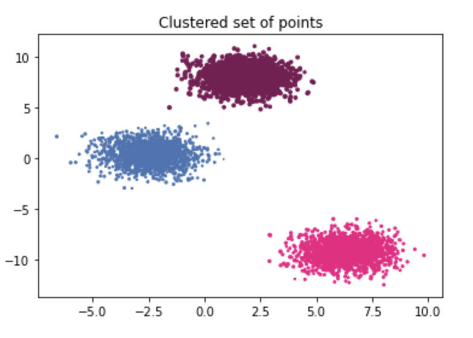

{% block blogs %}
<div class="col s12 m10 ">
    <div class="card">
        <span class="card-title deep-orange-text fa-regular left valign-wrapper">K-Means</span>
        <div class="card horizontal right">
          <div class="card-image">
            
          </div>
          <div class="card-stacked">
            <div class="card-content">
                <p class="blue-grey-text fa-thin">
                    Kmeans is one of the simplest and most popular clustering algorithim that uses distance between feature points to create clusters. Normal kmeans clustering randomly assigns K points in feature space as cluster centers. Then i_th cluster is assigned a point if, the distance between the point and cluster i is minimum as compared to all other cluster centers.
                    <br><br>Once all points are clustered, mean of each cluster is calculated which becomes new cluster centers. This process is repeated till new cluster and cluster in previous iteration are almost similar to each other or certain number of iterations has been completed. 
                  </p>
            </div>
            <div class="card-action">
              <a href="../static/kmeans.pdf">Show More</a>
            </div>
          </div>
        </div>
      </div>
</div>
{% endblock %}